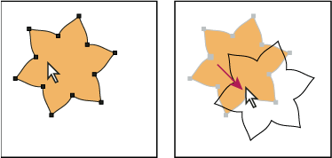
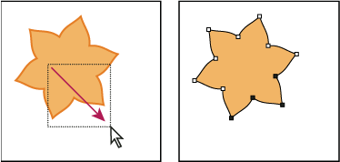

Select filled objects
The Object Selection By Path Only preference determines whether you can select a filled object by clicking anywhere within the object’s area with the Selection or Direct Selection tools, or whether you must click a path segment or anchor point with these tools. By default, this preference is off. In some cases, you may want to turn the preference on—for example, when you work with overlapping filled objects and you want to easily select underlying objects.
Note: The
Object Selection By Path Only preference is not applicable when
selecting unfilled objects or when viewing artwork as outlines.
In these cases, you can never select an object by clicking inside
the object’s path. (See View artwork as outlines.)

With Object Selection By Path Only deselected, clicking inside
the object and dragging selects and moves an object.

With Object Selection By Path Only selected, dragging with
the Direct Selection tool selects points and segments within a marquee.
 Choose Edit > Preferences >
Selection & Anchor Display (Windows) or Illustrator >
Preferences > Selection & Anchor Display (Mac OS),
and select Object Selection By Path Only.
Choose Edit > Preferences >
Selection & Anchor Display (Windows) or Illustrator >
Preferences > Selection & Anchor Display (Mac OS),
and select Object Selection By Path Only.